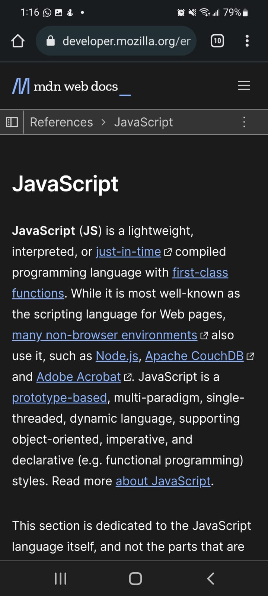
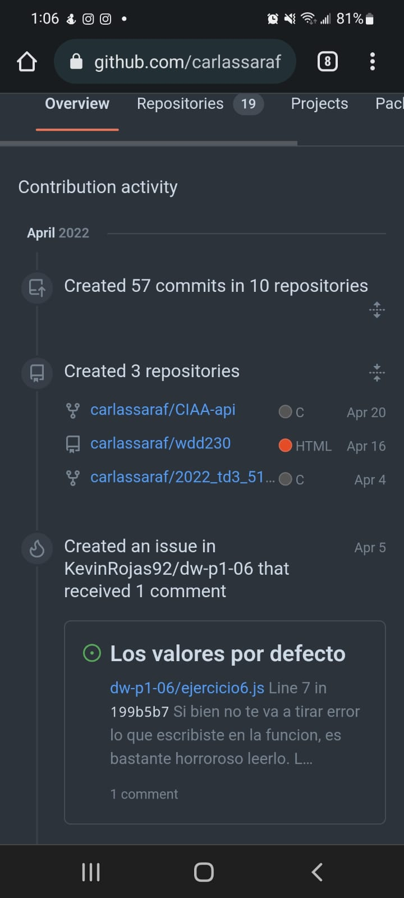
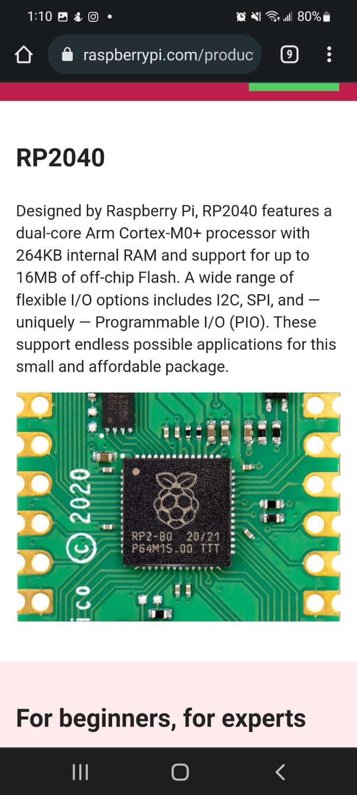

Visual Hierarchy
Developer Mozilla

We can see in the JavaScript Documentation by Mozilla Developer that every new topic they make it clear its hierarchy by the size of the headings, the spacing, the strong font. This makes it easier to determine what things they want us to know are more important to pay attention.
Alignment
GitHub

Here is an example of alignment within the Contribution Activity of a GitHub profile. The alignment of the different elements helps the reader understand the relation between all of them.
Contrast
Raspberry

From the Raspberry Pi website there a couple of examples of contrast with colours. They use them to visually separate the diferrent sections of the page to make it more friendly for the reader.